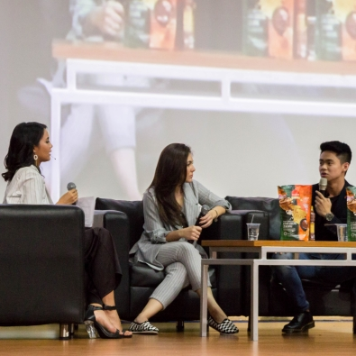
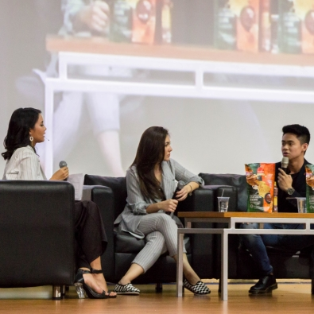
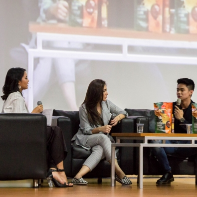
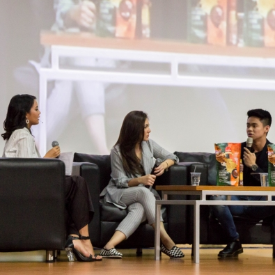

Fun Workshop merupakan salah satu rangkaian acara di Teknik Open House 2022 yang dilaksanakan di hari yang sama dengan Talkshow Kelana Cita. Fun Workshop terdiri dari dua kegiatan inti, pertama diawali oleh simulasi kelas yaitu pemaparan materi dasar yang menggambarkan masing-masing jurusan secara menyenangkan. Setelah itu, dilanjutkan dengan praktikum sederhana dari masing-masing departemen yang ada di Fakultas Teknik Universitas Indonesia guna memberikan pemahaman secara lebih mendalam mengenai apa yang dipelajari di masing-masing jurusan.
| Bentuk Acara | : Mentoring Kelompok |
| Waktu | : Sabtu, 5 November 2022 |
| Lokasi | : Fakultas Teknik UI |
Workshop yang membawakan materi pembuatan jembatan kayu balsa merupakan praktikum yang bertujuan untuk menyusun sebuah jembatan yang sudah direncanakan menggunakan potongan-potongan kayu balsa. Peserta akan diajarkan dan diarahkan untuk membuat dan menyusun potongan kayu balsa sehingga menjadi hasil sebuah jembatan menggunakan perekat lem kayu. Dengan mengikuti workshop ini, para peserta akan mendapat gambaran secara mendasar dari Teknik Sipil dan Lingkungan.
Workshop menggambar teknik merupakan panduan atau acuan yang digunakan untuk merancang, merakit, merenovasi atau mengubah sebuah mesin dengan standar kesepakatan dalam bentuk garis, simbol dan tulisan yang dituangkan dalam bentuk gambar yang biasa dikerjakan di dalam Teknik Mesin. Dengan adanya gambar teknik mesin memudahkan proses fabrikasi, manufaktur atau pekerjaan tertentu tanpa harus ada kontak lisan dan bisa langsung dikerjakan sesuai dengan standar yang berlaku.
Workshop yang membawakan materi elektronika digital akan dilaksanakan secara berkelompok dengan peserta workshop lainnya. Workshop ini bertujuan untuk mengajarkan peserta mengenai konsep dasar digital, gerbang logika, dan komponen-komponen elektronika. Dengan mengikuti workshop materi ini, akan membantu peserta dalam memahami dan mendapat gambaran mengenai dasar dari Teknik Elektro.
Workshop membawakan materi non newtonian atau prinsip fluida yang memiliki gaya angkat. Nantinya, akan disediakan dua wadah yang berisikan air yang telah direkayasa dan yang tidak dan dalam dua wadah akan diberikan beban masing-masing. Kemudian akan dijatuhi telur ke dalam dua wadah dan melihat hasil bahwa telur pecah ataupun tidak. Prinsip yang dipakai dalam workshop ini dapat memberikan gambaran dasar terkait Teknik Metalurgi dan Material.
Workshop membawakan materi pembuatan maket sederhana yang mengacu pada beberapa bangunan karya arsitek Frank Gehry yang memiliki ciri khas menonjol sehingga para peserta akan merepresentasikan bangunan tersebut dengan membawakan ciri khasnya sesuai dengan kreativitas kelompok dalam bentuk maket. Tujuan dari adanya workshop ini adalah membuat peserta mampu berpikir kritis tentang aspek penting yang ada di bangunan yang dijadikan contoh tersebut.
Workshop yang membawakan materi gambar proses ini akan dilaksanakan dan dikerjakan secara berkelompok dengan peserta workshop lainnya. Workshop ini bertujuan untuk memberikan gambaran secara mendasar terkait Teknik Kimia. Dalam workshop ini, peserta diharapkan untuk berdiskusi dan mendapatkan hasil dari study case yang diberikan dan menuangkan hasilnya dalam bentuk gambar proses. Dengan mengikuti workshop materi ini, peserta mendapat gambaran dasar dari Teknik Kimia.
Workshop yang membahas salah satu tools paling mendasar dan mencakup dari Teknik Industri, yaitu fishbone diagram. Peserta workshop akan diberikan suatu study case untuk dipecahkan oleh peserta yang didiskusikan secara berkelompok dan diakhiri dengan pemaparan hasil diskusi dari masing-masing kelompok workshop. Dengan mengikuti workshop ini, peserta dapat memahami salah satu metode untuk menganalisa dari salah satu masalah atau kondisi. Oleh karena fishbone merupakan salah satu tools dasar yang sering digunakan di Teknik Industri, para peserta akan mendapat gambaran secara dasar dari Teknik Industri.